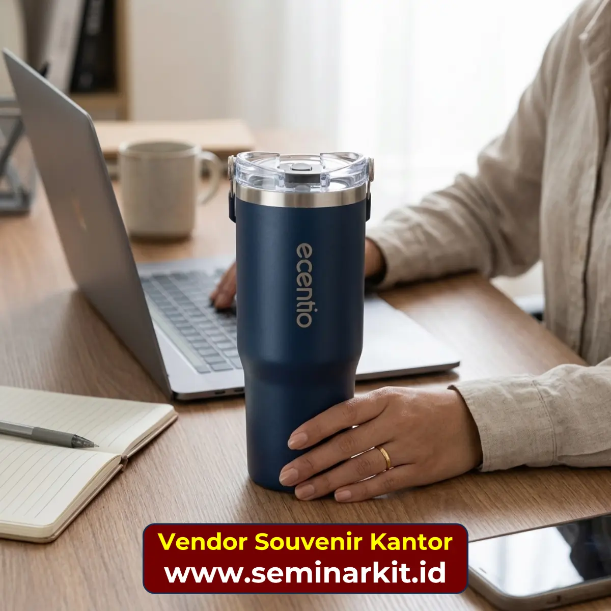

Saat perusahaan Anda berencana mengadakan pengadaan souvenir untuk karyawan, klien, atau mitra bisnis, satu pertanyaan yang paling sering muncul adalah: apa bedanya merchandise, corporate gift, dan hampers? Dan yang lebih penting — kapan seharusnya perusahaan menggunakan masing-masing?
Pertanyaan ini terdengar sederhana, namun jawabannya cukup krusial. Salah memilih kategori produk bisa membuat anggaran tidak efisien, pesan branding tidak tersampaikan, atau bahkan penerima merasa kurang dihargai. Tim purchasing dan HR yang memahami perbedaan ini akan jauh lebih mudah menyusun brief pengadaan, berkomunikasi dengan vendor, dan memaksimalkan dampak program perusahaan.
Artikel ini adalah panduan pillar yang akan menjawab perbedaan mendasar ketiga kategori tersebut, lengkap dengan konteks penggunaan, contoh produk, dan tips memilih yang tepat sesuai tujuan program Anda.
Apa Itu Merchandise Perusahaan?
Merchandise perusahaan adalah produk promosi atau identitas brand yang dirancang untuk memperkuat kehadiran dan kesadaran merek (brand awareness) — baik ke internal karyawan maupun ke audiens eksternal. Merchandise umumnya dicetak atau disablon dengan logo, tagline, atau identitas visual perusahaan.
Karakteristik Merchandise:
- Tujuan utama: Branding, promosi, dan identitas perusahaan
- Penerima: Karyawan, peserta event, audiens media sosial, customer umum
- Skala: Biasanya diproduksi dalam jumlah besar (ratusan hingga ribuan pcs)
- Nilai per item: Relatif terjangkau, karena volume tinggi
- Contoh produk: Kaos, polo shirt, tote bag, notebook, pulpen, tumbler, pin, stiker, lanyard, ID card holder
Kapan Perusahaan Menggunakan Merchandise?
Merchandise paling tepat digunakan dalam situasi-situasi berikut:
1. Event Internal Perusahaan Annual meeting, gathering karyawan, peluncuran produk internal, atau peringatan ulang tahun perusahaan. Merchandise menjadi kenang-kenangan yang memperkuat rasa kebersamaan dan identitas tim.
2. Event Eksternal dan Pameran (Expo) Saat perusahaan hadir di pameran industri, konferensi, atau booth event, merchandise menjadi media promosi yang dibawa pulang oleh pengunjung — memperpanjang jangkauan branding melampaui lokasi acara.
3. Program Loyalitas Karyawan Merchandise dengan desain eksklusif bisa menjadi reward untuk karyawan berprestasi atau sebagai bagian dari program employee engagement.
4. Konten Media Sosial dan Giveaway Banyak perusahaan menggunakan merchandise branded sebagai hadiah kontes atau giveaway di platform digital untuk meningkatkan engagement dan follower organik.
Kunci memilih merchandise yang tepat: Pastikan produk relevan dengan aktivitas sehari-hari penerima dan kualitasnya cukup baik untuk digunakan (bukan sekadar disimpan). Tumbler, tote bag, dan notebook adalah kategori paling tahan lama sebagai merchandise.
Apa Itu Corporate Gift?
Corporate gift adalah hadiah formal yang diberikan perusahaan kepada pihak-pihak tertentu — umumnya klien, partner bisnis, stakeholder, atau mitra strategis — sebagai bentuk apresiasi, penghargaan, atau pemeliharaan hubungan bisnis. Berbeda dengan merchandise yang fokus pada branding massal, corporate gift lebih berorientasi pada kualitas dan kesan personal.
Karakteristik Corporate Gift:
- Tujuan utama: Apresiasi, mempererat relasi bisnis, menjaga loyalitas klien
- Penerima: Klien VIP, partner strategis, direksi, investor, stakeholder penting
- Skala: Umumnya dalam jumlah terbatas dan lebih terseleksi (20–500 pcs)
- Nilai per item: Lebih tinggi dibanding merchandise biasa
- Contoh produk: Tumbler premium, set alat tulis eksklusif, wine atau minuman premium, aksesoris kulit, produk wellness branded, box set eksklusif
Kapan Perusahaan Menggunakan Corporate Gift?
1. Akhir Tahun dan Momen Lebaran Ini adalah momentum paling klasik untuk corporate gifting. Perusahaan mengirimkan hadiah kepada klien dan mitra sebagai tanda terima kasih atas kerjasama selama satu tahun.
2. Penandatanganan Kontrak dan Onboarding Klien Baru Memberikan corporate gift saat klien baru mulai bergabung adalah cara efektif membangun kesan pertama yang positif dan profesional.
3. Pencapaian Milestone Bisnis Bersama Ketika target proyek tercapai, kerjasama diperpanjang, atau ada pencapaian signifikan bersama klien, corporate gift menjadi simbol penghargaan yang bermakna.
4. Kunjungan Tamu Penting Saat tamu VVIP, investor, atau delegasi asing berkunjung, corporate gift yang elegan mewakili citra profesional perusahaan.
Kunci memilih corporate gift yang tepat: Prioritaskan kualitas dan presentasi packaging. Corporate gift yang dikemas buruk akan merusak kesan, meski produknya bagus. Sesuaikan juga dengan budaya penerima — perhatikan apakah ada produk yang sebaiknya dihindari (misalnya alkohol untuk penerima tertentu).
Apa Itu Hampers?
Hampers adalah paket gift yang terdiri dari beberapa item yang dikurasi dan dikemas bersama dalam satu wadah — biasanya berupa keranjang, box eksklusif, atau kemasan premium. Di Indonesia, istilah hampers sangat identik dengan momen perayaan seperti Lebaran, Natal, Tahun Baru, atau ulang tahun perusahaan.
Karakteristik Hampers:
- Tujuan utama: Perayaan, apresiasi momen khusus, mempererat hubungan emosional
- Penerima: Klien, karyawan, mitra bisnis, komunitas, atau keluarga karyawan
- Skala: Bisa dari belasan hingga ribuan paket tergantung kebutuhan
- Nilai per item: Bervariasi, tergantung isi dan packaging
- Contoh isi: Produk makanan premium, hampers kosmetik, hampers wellness (teh, madu, vitamin), kombinasi snack dan souvenir branded, atau hampers all-merchandise eksklusif
Kapan Perusahaan Menggunakan Hampers?
1. Lebaran / Hari Raya Idul Fitri Ini adalah momen hampers paling besar di Indonesia. Hampir semua perusahaan mengirimkan hampers kepada klien, mitra, dan karyawan sebagai bentuk silaturahmi dan penghargaan.
2. Natal dan Tahun Baru Untuk perusahaan yang memiliki klien lintas agama dan budaya, hampers akhir tahun menjadi solusi yang inklusif.
3. Ulang Tahun Perusahaan (Anniversary) Hampers branded dengan logo dan identitas perusahaan dikirimkan kepada klien setia sebagai bentuk perayaan bersama.
4. Apresiasi Program HR Karyawan yang mencapai target, menikah, melahirkan, atau memasuki masa pensiun sering diberikan hampers sebagai wujud perhatian personal perusahaan.
Kunci memilih hampers yang tepat: Perhatikan kesesuaian isi hampers dengan profil penerima, masa kedaluwarsa produk makanan, kualitas packaging agar tahan selama pengiriman, dan apakah ada opsi kustomisasi branded untuk memperkuat identitas perusahaan.

Perbandingan Langsung: Merchandise vs Corporate Gift vs Hampers
| Aspek | Merchandise | Corporate Gift | Hampers |
|---|---|---|---|
| Tujuan Utama | Branding & promosi | Apresiasi relasi bisnis | Perayaan & apresiasi emosional |
| Penerima Ideal | Karyawan, peserta event, publik | Klien VIP, partner strategis | Klien, karyawan, mitra |
| Skala Produksi | Besar (ratusan–ribuan) | Sedang (20–500) | Variabel (belasan–ribuan) |
| Nilai per Item | Rendah–menengah | Menengah–tinggi | Menengah–sangat tinggi |
| Momen Penggunaan | Event, gathering, pameran | Akhir tahun, kontrak baru, milestone | Lebaran, Natal, anniversary |
| Fokus Branding | Tinggi | Sedang | Rendah–sedang |
| Kompleksitas Pengadaan | Sedang | Sedang | Tinggi (kurasi isi, packaging) |
Bisakah Ketiganya Digabungkan?
Tentu bisa — dan justru inilah yang sering dilakukan perusahaan besar. Contohnya:
Hampers berisi merchandise: Perusahaan membuat hampers Lebaran yang berisi tumbler branded, notebook eksklusif, dan beberapa produk makanan premium. Ini menggabungkan kesan perayaan (hampers) dengan nilai branding (merchandise).
Corporate gift berbentuk hampers: Untuk klien VIP, perusahaan menyiapkan box eksklusif berisi produk premium pilihan — ini masuk kategori corporate gift tapi dikemas ala hampers.
Merchandise sebagai pelengkap event: Seminar kit yang dibagikan di acara konferensi adalah merchandise yang berfungsi juga sebagai corporate gift bagi peserta undangan VIP.
Kunci utamanya adalah tujuan program dan profil penerima — dua faktor itu yang menentukan kombinasi terbaik.
Bagaimana Cara Memulai Pengadaan yang Tepat?
Setelah memahami perbedaan ketiga kategori ini, langkah selanjutnya adalah menyusun brief pengadaan yang jelas. Sampaikan kepada vendor souvenir kantor Anda:
- Tujuan program — Apakah ini untuk event, apresiasi klien, atau perayaan?
- Profil penerima — Siapa yang akan menerima? Apa jabatan dan preferensi mereka?
- Jumlah penerima — Berapa total pax atau pcs yang dibutuhkan?
- Budget per paket — Kisaran budget ini akan menentukan pilihan produk dan packaging
- Timeline pengiriman — Kapan produk harus sudah diterima?
- Area distribusi — Apakah pengiriman ke satu lokasi atau ke banyak kota?
Dengan brief yang lengkap, vendor bisa memberikan rekomendasi yang lebih akurat — baik dari sisi produk, branding, maupun estimasi biaya.

Banner promosi: klik gambar untuk langsung terhubung ke WhatsApp tim sales.
Kesimpulan
Merchandise, corporate gift, dan hampers adalah tiga kategori yang berbeda secara tujuan, penerima, dan konteks penggunaannya. Merchandise paling tepat untuk branding massal di event dan program internal. Corporate gift ideal untuk mempererat relasi bisnis dengan klien dan partner strategis. Hampers adalah pilihan terbaik untuk momen perayaan dan apresiasi yang lebih personal.
Memahami perbedaan ini tidak hanya membantu Anda memilih produk yang tepat, tetapi juga memaksimalkan dampak setiap rupiah anggaran pengadaan yang perusahaan Anda keluarkan.
Untuk artikel lebih detail tentang masing-masing kategori, baca juga:
- 📦 Panduan Hampers Perusahaan: Produk, Budget, dan Tips Distribusi Massal
- 🎁 Cara Memilih Tumbler Custom untuk Souvenir Kantor Perusahaan
- 🎒 Checklist Seminar Kit yang Wajib Ada untuk Event Korporat
- 👋 Onboarding Kit Karyawan Baru: Apa Saja yang Perlu Disertakan?
Butuh rekomendasi produk yang sesuai dengan kebutuhan perusahaan Anda? Konsultasikan langsung dengan tim Vendor Souvenir Kantor di vendorsouvenirkantor.web.id atau via WhatsApp di 0895-6390-68080. Konsultasi awal gratis.
FAQ Seputar Topik Ini
Apa perbedaan utama merchandise dan corporate gift?
Merchandise berfokus pada branding massal, sedangkan corporate gift berfokus pada apresiasi relasi bisnis dengan kualitas dan personalisasi lebih tinggi.
Kapan perusahaan sebaiknya memilih hampers?
Hampers paling relevan untuk momen perayaan seperti Lebaran, Natal, atau anniversary saat perusahaan ingin memberi sentuhan emosional yang lebih hangat.
Apakah ketiga kategori ini bisa digabung dalam satu program?
Bisa. Banyak perusahaan menggabungkan merchandise dan hampers, atau membuat corporate gift dalam format box hampers sesuai profil penerima.
Apa faktor pertama sebelum menentukan kategori souvenir?
Tetapkan tujuan program dan profil penerima terlebih dahulu agar pemilihan kategori, isi produk, serta budget lebih tepat sasaran.